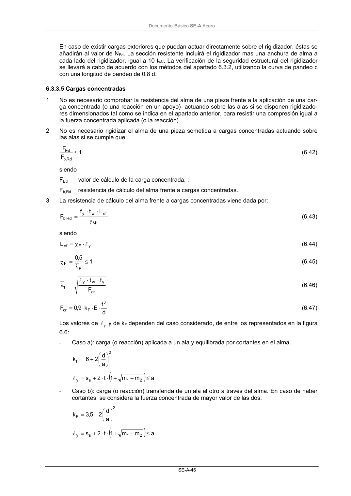
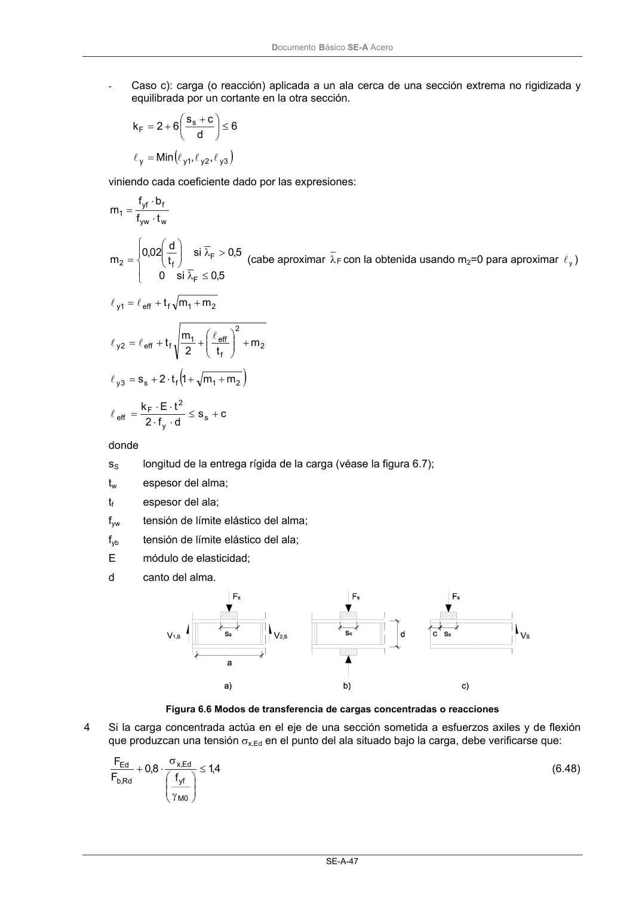

DB-SE-A · Fragmento de PDF p48 · versión 2007-10-23 · capa oficial
Formatos: JSON compacto · Markdown · PDF fuente
Ámbito del documento · texto del ámbito · documento y tablas
ID técnico a0086 · PDF pág. 48-50 · jerarquía no validada por persona · no es capítulo: sin_linea_de_encabezado · padre: raíz · literal original en el contenido: «( )»
( ) ) a m m 1 t 2 s 2 1 s y ≤ + + ⋅ ⋅ + = l - Caso b): carga (o reacción) transferida de un ala al otro a través del alma. En caso de haber cortantes, se considera la fuerza concentrada de mayor valor de las dos. 2 F a d 2 5,3 k + = ( ) ) a m m 1 t 2 s 2 1 s y ≤ + + ⋅ ⋅ + = l DocumentoBásico SE-A Acero SE-A-47 - Caso c): carga (o reacción) aplicada a un ala cerca de una sección extrema no rigidizada y equilibrada por un cortante en la otra sección. 6 d c s 6 2 k s F ≤ + + = ( ) ) 3 y 2 y 1 y y , , Min l l l l = viniendo cada coeficiente dado por las expresiones: w yw f yf 1 t f b f m ⋅ ⋅ = ≤ λ > λ = 5,0 si 0 5,0 si t d 02 ,0 m F F f 2 (cabe aproximar F λcon la obtenida usando m2=0 para aproximar y l) 2 1 f eff 1 y m m t + + = l l 2 2 f eff 1 f eff 2 y m t 2 m t + + + = l l l ( ) ) 2 1 f s 3 y m m 1 t 2 s + + ⋅ + = l c s d f 2 t E k s y 2 F eff + ≤ ⋅ ⋅ ⋅ ⋅ = l donde sS longitud de la entrega rígida de la carga (véase la figura 6.7); tw espesor del alma; tf espesor del ala; fyw tensión de límite elástico del alma; fyb tensión de límite elástico del ala; E módulo de elasticidad; d canto del alma. Figura 6.6 Modos de transferencia de cargas concentradas o reacciones 4 Si la carga concentrada actúa en el eje de una sección sometida a esfuerzos axiles y de flexión que produzcan una tensión σx,Ed en el punto del ala situado bajo la carga, debe verificarse que: 4 ,1 f 8,0 F F 0 M yf Ed ,x Rd , b Ed ≤ γ σ ⋅ + (6.48) DocumentoBásico SE-A Acero SE-A-48 Figura 6.7 Ancho de la entrega rígida de una carga sobre un ala


PDF fuente redistribuible: copia fiel enlazada en esta página (SHA256 verificado).